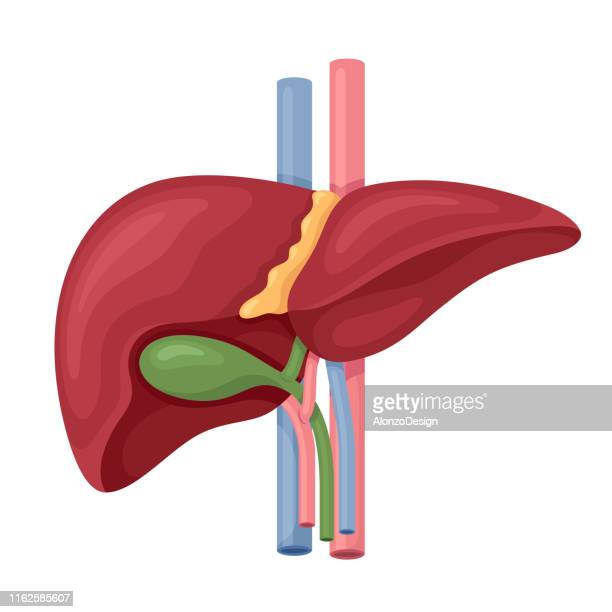

| Higado | |
El hígado es un órgano de color marrón rojizo oscuro con forma de triángulo que pesa alrededor de 3 libras. Tiene múltiples funciones. El hígado recibe irrigación sanguínea a través de dos fuentes: La sangre oxigenada fluye hacia el hígado a través de la arteria hepática. |
 |